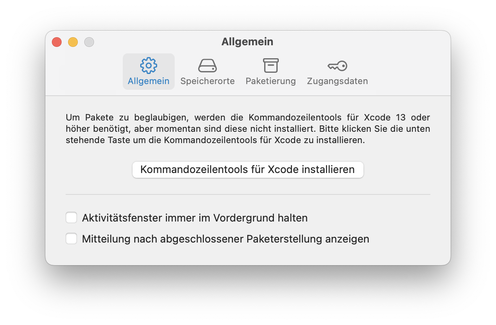
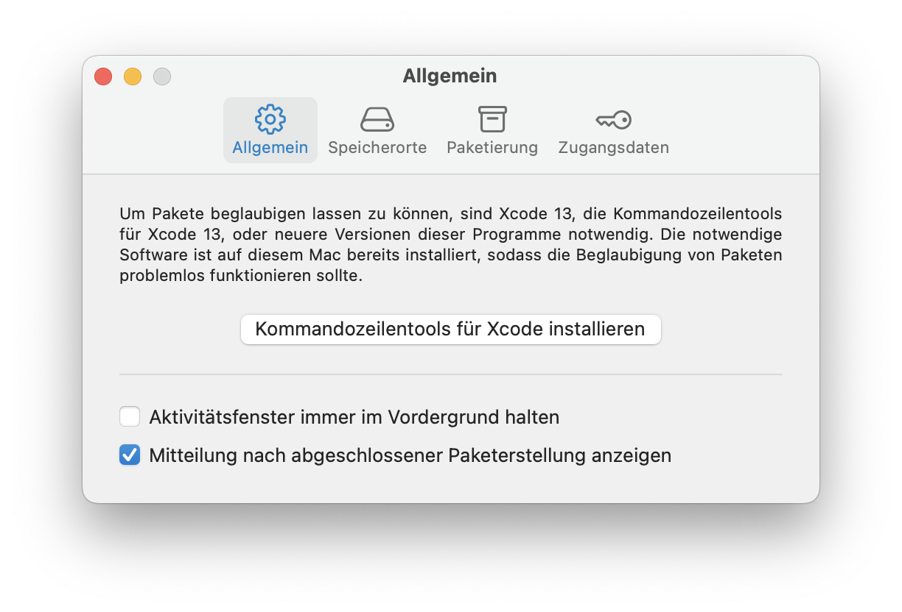
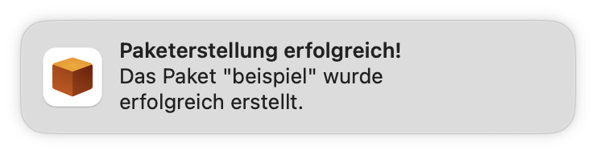

Script2Pkg
Script2Pkg
Script2Pkg
Mitteilungen über neue Pakete
Um Mitteilungen für neu erstellte Pakete zu erhalten, gehen Sie bitte wie folgt vor:
1. Wählen Sie im Menü Script2Pkg den Menüpunkt Einstellungen …

2. Wählen Sie die Option Allgemein .

3. Um Mitteilungen zu aktivieren, wählen Sie bitte Mitteilung nach abgeschlossener Paketerstellung anzeigen aus.

Sobald Sie die Option Mitteilung nach abgeschlossener Paketerstellung anzeigen aktiviert haben, erhalten Sie nach der Erstellung eines neuen Pakets eine Mitteilung, wie nachfolgend abgebildet.

Standardeinstellung wiederherstellen
Um die Standardeinstellung wiederherzustellen, deaktivieren Sie bitte die Option Mitteilung nach abgeschlossener Paketerstellung anzeigen .